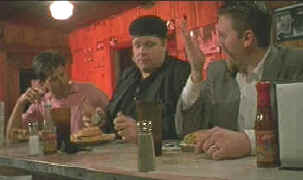

|
Blood,
Guts, Bullets, & Octane/B,B |
|
Universal/1999/87m/WS
1.85 |
A wicked black comedy driven at a furious pace by
writer/director/editor/actor Joe Carnahan. The novice filmmaker
delivers a movie about the two young owners of Bob and
Sid's Auto Emporium, used car dealers on the brink of financial
disaster. Their questionable sales techniques backfire
more than their shoddy inventory. Former employees of
super successful Danny Woo, whose Woo's Wild World of
Resale is located just down the road a piece, the slick
sales duo are struggling to make a go of it.
Financial desperation and a good deed from an unlikely
source suck them into a whirlwind of madness and mayhem.
 |
| Sid
and Bob meet the man in black. ©Universal |
Some
viewers may find Blood, Guts, Bullets &
Octane emulates the style of Quentin Tarantino,
but Carnahan has his own frenetic voice. His story
telling unfolds with more linear force than
Tarantino's work. Carnahan cuts with the same reckless abandon in
which his characters approach their destiny. The
rapid fire delivery of images, dialogue and plot
detours is a joy to watch, if sometimes a meal
served so fast that digestion is dubious. Carnahan
liberally sprinkles the action with more title cards
than a typical silent movie, and while they are
often funny, there are far too many. It almost seems
like the director is padding the film with extra
minutes. The cinematography includes a mix of dreamy
black and white images that strain for effect with
bright color work on what appears to be a variety of
film stocks. The score by Luis Resto, Dan Koltan and
Mark Priolo is consistently funny.
Carnahan works well with his actors, both as co-star
and director. The banter between partners Bob
and Sid is often hilarious and seldom leaves the
audience with a moment to sort out the sales wisdom. Don
Leis does a good job playing the less exciting
character Bob, but it is Carnahan that commands the
screen with outrageous gusto. Dan Harlan is quite
funny as mentor Danny Woo.
The
DVD is every bit as slick as the car salesmen
appear, but it delivers the real goods. The
widescreen images are consistently sharp with
outstanding depth. Color saturation is rich and NTSC
artifacts are kept at bay. High light output with
excellent contrast balance makes for a bright
picture on any monitor. The Dolby Digital surround
is an active mix and the score delivered with clean,
upbeat rhythms.
|
|
|

Selections from the feature archive
include articles on
Akira Kurosawa, Frank
Darabont, Blonde
Bimbos, Hollywood
Street Gangs, or Vietnam:
The Hollywood Pariah, and many more....
 Why
do Al Pacino, Gene Hackman, Pat O'Brien and Goldie
Hawn fall into a select group of actors? Find out
more by clicking the Hollywood
on the Sidelines symbol. Why
do Al Pacino, Gene Hackman, Pat O'Brien and Goldie
Hawn fall into a select group of actors? Find out
more by clicking the Hollywood
on the Sidelines symbol.
  Direct
from the corridors of the Home
Theater Forum, Home Theater Talk is
the newest place on the Net to
discuss everything home theater.
Friendly atmosphere and
knowledgeable folks are the secret
ingredients. Direct
from the corridors of the Home
Theater Forum, Home Theater Talk is
the newest place on the Net to
discuss everything home theater.
Friendly atmosphere and
knowledgeable folks are the secret
ingredients.
They may
be judgmental, but that's the point, isn't it. Lots of DVD reviews
plus news and more.
Click on the link to visit the judge's chambers.

 A
love of movies drives this small DVD production company, Synapse
Films. Currently specializing in horror and cult films.
Watch for new DVD releases of film festival independents as Synapse
branches out. A
love of movies drives this small DVD production company, Synapse
Films. Currently specializing in horror and cult films.
Watch for new DVD releases of film festival independents as Synapse
branches out.

The
Movie Poster Archive include extensive poster images from the
films of stars like Susan Hayward, Kirk Douglas, Katharine
Hepburn and many more. This month's featured star is Robert
Mitchum
|